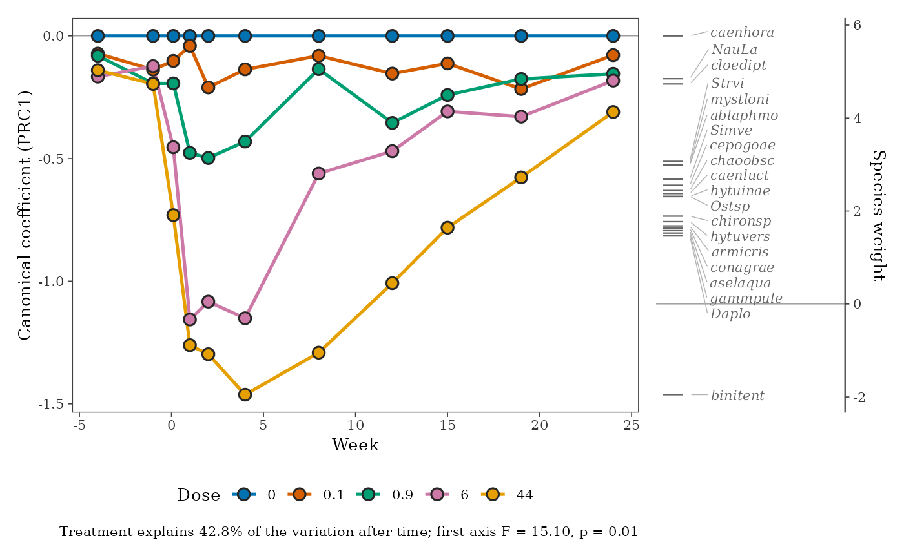

ord_prc() fits principal response curves (PRC; van den Brink and ter
Braak 1999), a partial redundancy analysis that shows how the community
of each treatment departs from a control over time, with time as a
condition. Each treatment's departure at each time is one canonical
coefficient, and each species has a weight: species with large positive
weights follow the curves, species with large negative weights do the
opposite. autoplot() draws the classic PRC diagram: the curves of the
treatments against time, with the control as the zero line, and the
species weights on a scale beside them.
Arguments
- data
A data frame in long format, with one row per record.
- treatment, time
Columns giving the treatment and the time (survey year or sampling date) of each site (sample).
- site, species
<
tidy-select> The column holding site identifiers and the column holding species names.- abundance
<
tidy-select> The column holding counts. IfNULL(the default), a column calledabundanceis used when present, otherwise every row counts as one individual.- control
Level of
treatmentused as the control; default the first level.- transform
Transformation of the abundances (as in
ord_fit()); default"log"(log(x + 1)), usual for PRC.- permutations
Number of permutations for the test of the first axis; permutations are restricted within times.
- object
An
ord_prc()result.- weights
Species weights to show: those with an absolute weight of at least this.
- n_species
At most this many species (the largest absolute weights) are labelled.
- palette
Colours of the treatments.
- style
Look of the diagram, from
ord_style().- ...
Not used.
Value
A list of class td_prc: curves (a tibble of treatment,
time and coefficient), species (a tibble of species and
weight), test (the permutation test of the first PRC axis),
explained (share of the variation explained by treatment, after
time) and the fitted vegan::prc() model.
References
van den Brink, P. J. and ter Braak, C. J. F. (1999). Principal response curves: analysis of time-dependent multivariate responses of biological community to stress. Environmental Toxicology and Chemistry, 18, 138-148.
Examples
# Chlorpyrifos in experimental ditches (van den Brink and ter Braak 1999):
# 12 ditches, 11 sampling weeks, five doses; abundances already log-transformed
data("pyrifos", package = "vegan")
ditch <- gl(12, 1, length = 132)
week <- gl(11, 12, labels = c(-4, -1, 0.1, 1, 2, 4, 8, 12, 15, 19, 24))
dose <- factor(rep(c(0.1, 0, 0, 0.9, 0, 44, 6, 0.1, 44, 0.9, 0, 6), 11))
pyr <- data.frame(site = paste(ditch, week, sep = "_"), dose, week, pyrifos)
pyr <- community_long(pyr, cols = dplyr::all_of(names(pyrifos)))
p <- ord_prc(pyr,
treatment = dose, time = week, abundance = abundance,
transform = "none", permutations = 99
)
p
#> Principal response curves: 4 treatments against "0", 11 times.
#> Treatment explains 42.8% of the variation after time; first axis F = 15.1, p =
#> 0.01.
ggplot2::autoplot(p, weights = 1)
